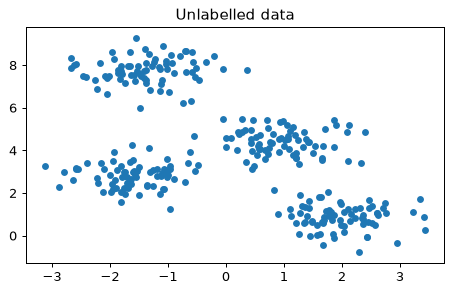
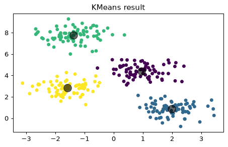
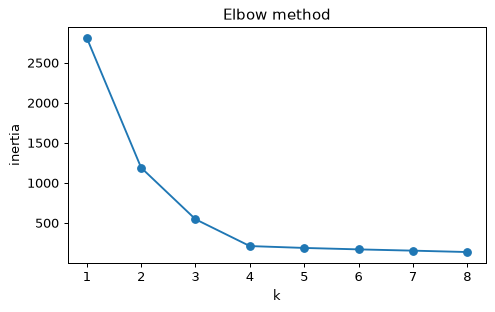
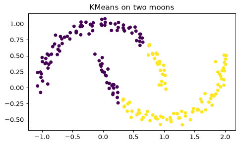

- Handbook 5.11 In Depth: k-Means Clustering
- Handbook 5.12 In Depth: Gaussian Mixture Models（名前だけ）
クラスタリングとK-Meansの考え方
クラスタリングは、ラベルなしのデータを「似たもの同士」のグループに分ける教師なし学習です。K-Meansは、グループ数 k を決め、次の2つを繰り返します。
- 各点を、一番近い中心のグループに入れる。
- 各グループの平均の位置に中心を動かす。
中心が動かなくなったら完成です。まず練習用のデータを作ります。
from sklearn.datasets import make_blobs X, y_true = make_blobs(n_samples=300, centers=4, cluster_std=0.60, random_state=0) plt.scatter(X[:, 0], X[:, 1], s=20) plt.title('Unlabelled data')

目で見ると4つのかたまり。K-Meansはそれを自動で見つけます。
上の X の行数（サンプル数）を n に入れてください。
n = X.shape[0]
300です。
scikit-learnのKMeans
使い方は他のモデルと同じです。ただし教師なしなので、fit(X)にyは渡しません。
from sklearn.cluster import KMeans kmeans = KMeans(n_clusters=4, n_init=10, random_state=0) kmeans.fit(X) y_kmeans = kmeans.predict(X) print(y_kmeans[:10]) print(np.bincount(y_kmeans)) print(kmeans.cluster_centers_.round(2))
plt.scatter(X[:, 0], X[:, 1], c=y_kmeans, s=20, cmap='viridis') c = kmeans.cluster_centers_ plt.scatter(c[:, 0], c[:, 1], c='black', s=150, alpha=0.6) plt.title('KMeans result')

ラベル0〜3の番号そのものに意味はありません。実行ごとに番号の振り方が変わることがあります（同じグループ分けでも）。
学習済みの kmeans について、クラスタ中心の個数を k に入れてください。
k = len(kmeans.cluster_centers_)
4つです。
kをどう決める？ エルボー法
正解がないので、kは自分で決めます。目安がinertia（各点と所属中心との距離の2乗の合計）です。kを増やすと必ず下がりますが、下がり方が急に緩やかになる「ひじ」のkがよい候補です。
ks = range(1, 9) inertias = [KMeans(n_clusters=k, n_init=10, random_state=0).fit(X).inertia_ for k in ks] plt.plot(list(ks), inertias, marker='o') plt.xlabel('k') plt.ylabel('inertia') plt.title('Elbow method')

k=4 までは急に下がり、その後は緩やかです。ひじは k=4 あたりと読めます。
「これ以上増やしても、あまり得をしない」点を探します。
n_clusters=4, n_init=10, random_state=0 のKMeansを X に当てはめ、inertia_ を小数第1位まで丸めて inr に入れてください。
inr = round(KMeans(n_clusters=4, n_init=10, random_state=0).fit(X).inertia_, 1)
約212.0 です。
K-Meansの限界と、次の一歩
- 最初の中心の置き方で結果が変わる →
n_initで何回も試して最良を採用。 - kを先に決める必要がある。
- 境界は「中心への近さ」で決まるので、細長い・入り組んだ形が苦手。
from sklearn.datasets import make_moons Xm, _ = make_moons(200, noise=0.05, random_state=0) lab = KMeans(n_clusters=2, n_init=10, random_state=0).fit_predict(Xm) plt.scatter(Xm[:, 0], Xm[:, 1], c=lab, s=20) plt.title('KMeans on two moons')

三日月型では、上下ではなく「左右」で割ってしまいます。こうした場合は、ガウス混合モデル（Handbook 5.12）やスペクトラルクラスタリングなど、別の手法を検討します。このレッスンでは存在を知っておけば十分です。
K-Meansは「丸くて、大きさがそろったかたまり」を想定しています。
pts を n_clusters=2, n_init=10, random_state=0 のKMeansでクラスタリングし、クラスタごとの人数を小さい順にしたリストを sizes に入れてください。
lab = KMeans(n_clusters=2, n_init=10, random_state=0).fit_predict(pts) sizes = sorted(np.bincount(lab).tolist())
3人と4人で [3, 4] です。